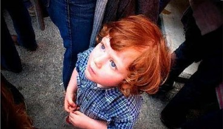
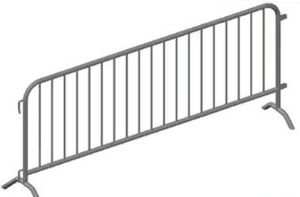
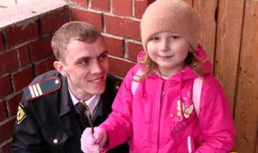

ЗАИГРАЛАСЬ, НЕЗАМЕТНО ПОТЕРЯЛАСЬ…
Не паникуй, остановись. Подожди здесь, родители уже ищут тебя. Если ты уйдешь далеко, им будет сложнее тебя найти. Обратись к «человеку в форме» за помощью.
Если ты потерялся в толпе

|
Если тебя оттеснили от родителей, постарайся держаться ближе к центру толпы, обходи всё большое и неподвижное на пути (памятники, тумбы и т.д.), чтобы не получить травму, если тебя придавят к препятствию. |

|
Не цепляйся за решётки, согни руки в локтях и прижми к себе, чтобы не вывихнуть или не сломать их. |

|
Как только удастся выбраться из толпы, беги к условленному месту или, если у тебя есть телефон, позвони взрослым, или обратись к «человеку в форме»: сотруднику МЧС, полицейскому, пожарному и т.д. |
Источник и подробная информация о действиях на сайте:
http://www.culture.mchs.gov.ru
ТЕЛЕФОН СЛУЖБЫ СПАСЕНИЯ: 112